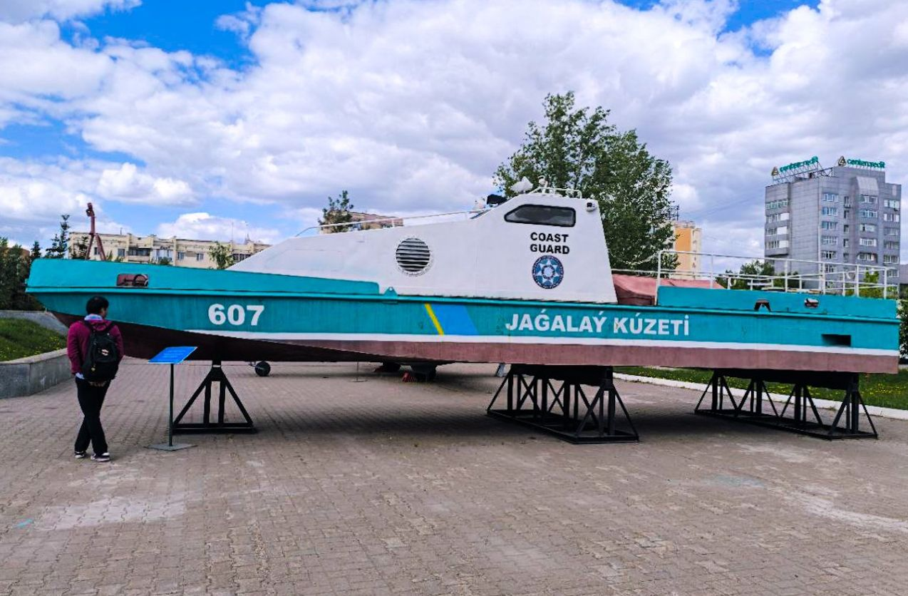

Галерея
Тридцать два фотоснимка из залов и с территории музея, сгруппированные по темам. Нажмите на любое фото, чтобы открыть его в полном размере.
Древность
 Фигуры в доспехах в галерее древней истории; одна — на фоне ярко-красной колонны.
Фигуры в доспехах в галерее древней истории; одна — на фоне ярко-красной колонны.
 Пластинчатые доспехи, копьё, луки и щит с золотым крылатым существом.
Пластинчатые доспехи, копьё, луки и щит с золотым крылатым существом.
 Воин с расписным круглым щитом на фоне степного сражения.
Воин с расписным круглым щитом на фоне степного сражения.
 Одиночный шлем на отдельном постаменте в галерее древней истории.
Одиночный шлем на отдельном постаменте в галерее древней истории.
 Скелет коня в реконструированной погребальной яме.
Скелет коня в реконструированной погребальной яме.
 Диорама: защитники стреляют из длинноствольных ружей со скалистого склона.
Диорама: защитники стреляют из длинноствольных ружей со скалистого склона.
 Огнестрельное оружие в витрине с розовой подсветкой; казахский заголовок относится к иностранному оружию XVIII–XIX веков.
Огнестрельное оружие в витрине с розовой подсветкой; казахский заголовок относится к иностранному оружию XVIII–XIX веков.
XX век
 Винтовка, револьвер и штык начала XX века.
Винтовка, револьвер и штык начала XX века.
 Портреты, винтовки, каска и документы в витрине Второй мировой войны.
Портреты, винтовки, каска и документы в витрине Второй мировой войны.
 Диорама сражения Второй мировой войны: солдаты поднимают красное знамя у разрушенного стеклянного купола.
Диорама сражения Второй мировой войны: солдаты поднимают красное знамя у разрушенного стеклянного купола.
 Экспозиция «Сталинград»: фотографии, карты, каски и личные вещи.
Экспозиция «Сталинград»: фотографии, карты, каски и личные вещи.
 Экспозиция «Ленинград», включая афишу концерта Шостаковича.
Экспозиция «Ленинград», включая афишу концерта Шостаковича.
 Витрина с заголовком «Өмір мен өлім арасындағы заттар» — «Предметы между жизнью и смертью».
Витрина с заголовком «Өмір мен өлім арасындағы заттар» — «Предметы между жизнью и смертью».
 Картина в раме: солдат в шинели.
Картина в раме: солдат в шинели.
Современные силы
 Тот же кабинет с другой стороны: деревянный стол, зелёные стулья и синие шторы.
Тот же кабинет с другой стороны: деревянный стол, зелёные стулья и синие шторы.
 Реконструированный кабинет офицера с государственным флагом и гербом.
Реконструированный кабинет офицера с государственным флагом и гербом.
 Флаг ООН рядом с витриной с фотографиями и знаками различия.
Флаг ООН рядом с витриной с фотографиями и знаками различия.
 Открытый парадный автомобиль перед экранами с архивными кадрами.
Открытый парадный автомобиль перед экранами с архивными кадрами.
 Подробная модель патрульного корабля в морской экспозиции.
Подробная модель патрульного корабля в морской экспозиции.
 Пульт со штурвалом и приборами рядом с моделями кораблей.
Пульт со штурвалом и приборами рядом с моделями кораблей.
 Кабина с отметкой «001», фигуры лётчиков и катапультное кресло.
Кабина с отметкой «001», фигуры лётчиков и катапультное кресло.
Под открытым небом
 Зенитная ракетная установка на открытой площадке.
Зенитная ракетная установка на открытой площадке.

Катер береговой охраны № 607 с надписью «Jagalay Küzeti» на стальных опорах.
 Бронетехника на мощёной площади.
Бронетехника на мощёной площади.